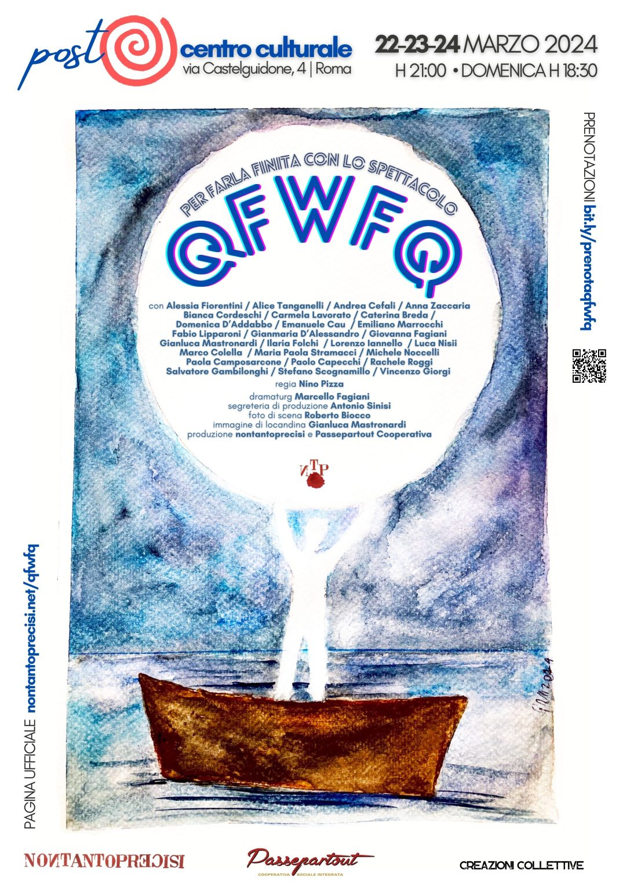
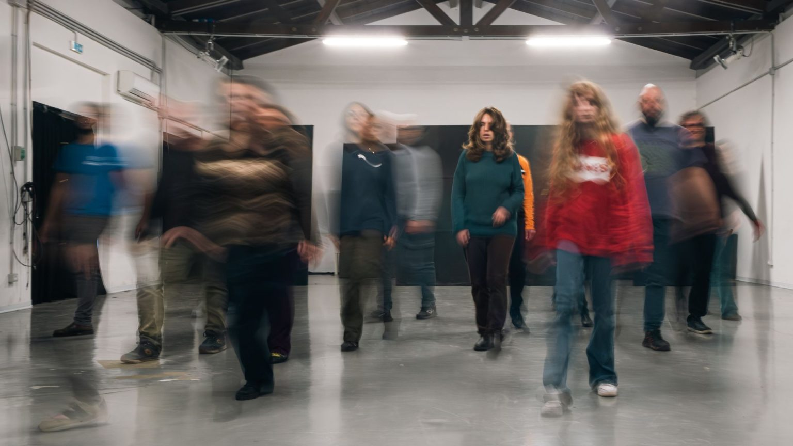
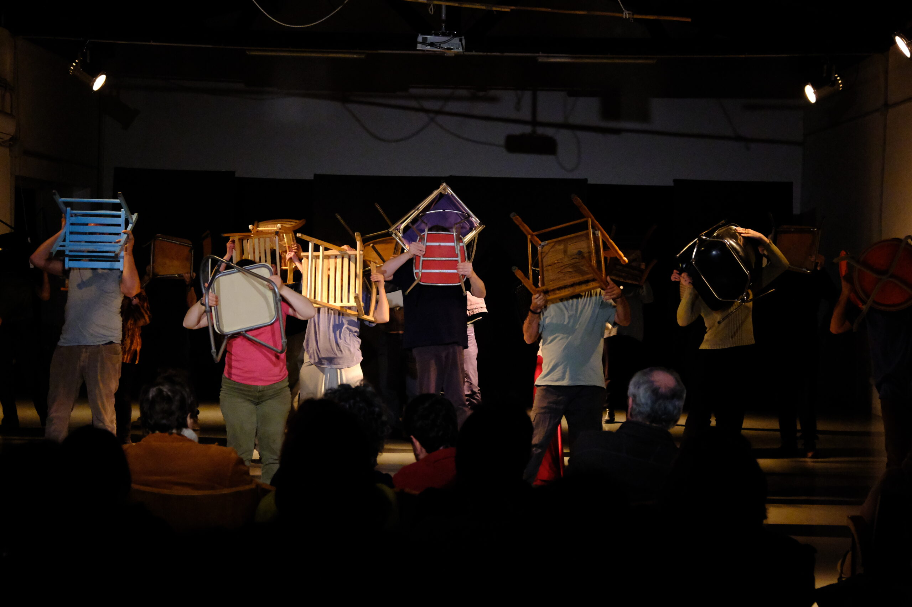
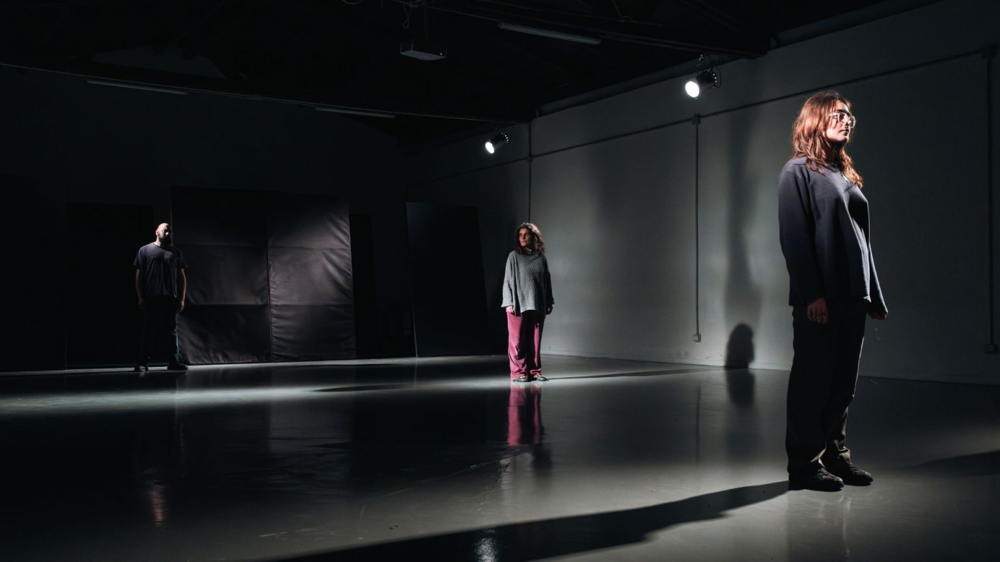

Sinossi
I nontantoprecisi incrociano Calvino attraverso lo studio della parola che dà scena. Qfwfq è il personaggio principale delle sue Cosmicomiche, un nome che non può dirsi se non in una vibrazione che scuote il corpo, rendendolo simile a un verso e che a seconda dello stato emotivo può avere diversa declinazione. Come Calvino lavora alla scrittura i nontantoprecisi lavorano alla parola, al di là della lettera che la costringe nel comune senso e lavorano alla sua presenza e necessità, ricercandone una partitura spazio-tempo-corpo che la incarna mettendola in azione. Al contrario tutto finirebbe per toglierle possibilità, forza, speranza espressiva, per consegnarla esclusivamente al vuoto del senso prescritto, istituzionale, incorporeo, chiudendola nel simulacro della comunicazione convenzionale e negandole la libertà della poesia.
Qfwfq è uno dei personaggi principali delle Cosmicomiche di Calvino che in alcuni racconti si configura anche come voce narrante che prende corpo in una dimensione trasversale al tempo e allo spazio. Il racconto calviniano, come la voce di Qfwfq, non sono collocabili in un tempo e spazio dati ma, liberi da queste condizioni, costruiscono un punto di vista visionario in grado di delineare la storia del mondo e del cosmo dalla contemplazione di una nuova quotidianità che improvvisamente si manifesta. Quello che Calvino descrive nelle sue narrazioni, le vicende e i fenomeni cui Qfwfq assiste, se pure definiscono immagini fantastiche di mondi extraplanetari che si originano e trasformano, non appaiono avulsi dal paesaggio terrestre che ci è noto ma, al contrario, è proprio attraverso quello che noi conosciamo che possiamo incontrarli. È quasi come una visione improvvisa, un flash non di un altro mondo bensì di quello che quotidianamente ci ospita e che improvvisamente ci appare nel processo dinamico che lo costruisce piuttosto che nelle forme alle quali siamo costantemente abituati. Le cose animate e inanimate si mostrano in una partitura dello spazio e del tempo che ha origine nel gesto corporeo che muove e rende vivi mettendo al mondo quello che già c’è per come ancora non è. L’esperienza visiva di Qfwfq, tradotta nella prosa calviniana, tesse una trama dove i fili dello spazio e del tempo si intrecciano e si annodano lasciando che ciascuno intuisca e disegni le figure e le forme della storia. Sulla scena l’esperienza narrativa si confronta con l’inevitabile mancanza che la parola porta con sé. Quanto può essere immediata per segnare l’istante che la richiede, quanto piena per colmare lo spazio che apre, quanto agile per sostenere il corpo che l’incarna? L’esercizio fisico che muove da queste inquietudini riporta una parola che si anima nel vibrare della voce che la dice ma anche nel silenzio che la tace, nell’articolazione del gesto che la abita ma anche nella sospensione del movimento che la segna. Così la parola si dà alla vista e l’ascolto è parte dell’azione che dà scena. È per questo che il nostro Qfwfq non è un personaggio ma una condizione corporea di lavoro e studio collettivo dove la prossimità, la condivisione, la conoscenza si manifestano come atto poetico.



Crediti foto: XXXX
← Torna a SPETTACOLI